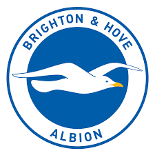

|
 |
My initial start was at the brighton football academy, where I learnt my initial ball controls,see it !!
it was tough for me to settle in as a mere 16 year old and I started to remember my legend Cristiano Ronaldo
life at the club was fairly normal , we used to train hard and the gaffer was
behind our asses , we got little clue that these tough training
sessions would actually shape my future as a successfull footballer
I trained and learnt with them for almost 2 years
I was an occasional starter in the derby matches held in our county.
they handed me the #30 jersey which was my first kit and I was pretty excited to wear it
Then it was actually the summer of 2017 when Psg's scout came to watch our game.
I was extreamely lucky tot score a freekick from 30 yards.
| Year | Activity | Status |
|---|---|---|
| 2015 | U-16 Football Championship | Runners up |
| 2016 | Grade school footballl Championship | Reached the semis |
| 2017 | Derby Championship representing Brighton FC | Winners |
| 2017 | American Tier 2 Championship | Runners up |
| 2018 | Ligue 1 French Tier 1 Championship | Winners |
| 2019 | Ligue 1 French Tier 1 Championship | Winners |
| 2020 | LAliga Spanish league Championship | Winners |
| 2020 | Suoer Copa De Espana | Winners |
| 2021 | Laliga Spanish league Championship | Winners |
| 2022 | UCL | Winners |
| 2023 | UEFA super Cup | Winners |
| Dribling | ★ ★ ★ ★ ☆ | Passing | ★ ★ ★ ☆ ☆ |
| Shooting | ★ ★ ★ ★ ★ | Sprint | ★ ★ ★ ☆ ☆ |
| Stamina | ★ ★ ★ ☆ ☆ | Agility | ★ ★ ★ ☆ ☆ |
| Skills | ★ ★ ★ ★ ☆ | Agression/Body | ★ ★ ★ ☆ ☆ |